Префектура Кагосима · город Кагосима · история
Кагосима реставрации Мэйдзи: по следам Такамори Сайго и трёх людей рядом с ним
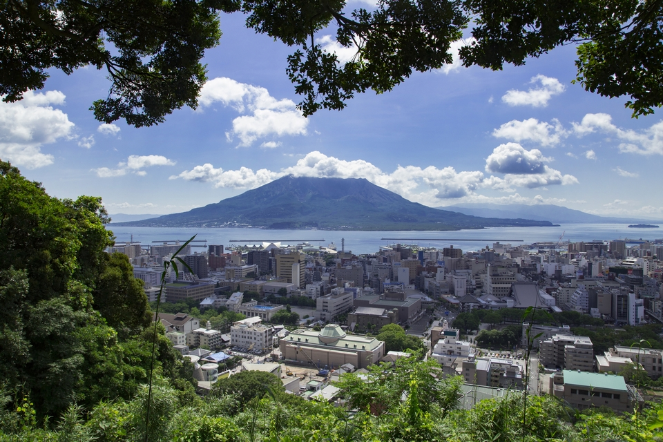
Город Кагосима дал Японии многих героев реставрации Мэйдзи, и главный из них Такамори Сайго. Здесь он родился, здесь основал свою школу и здесь же погиб, а рядом с ним всю жизнь были люди, без которых новая Япония не сложилась бы.
Эпоха
Город, где начиналась новая Япония
Реставрация Мэйдзи перевернула страну: за несколько лет рухнули порядки, которые держались около 270 лет эпохи Эдо. Многие из тех, кто совершил этот переворот, были самураями княжества Сацума, то есть нынешней префектуры Кагосима. Самый известный из них Такамори Сайго, и его родной город до сих пор хранит места, связанные с ним: дом, где он родился, усадьбу, где жил, холм, где закончилась его жизнь.
Маршрут по городу удобно построить вокруг двух районов. Первый это Кадзия-тё в центре, где родились Сайго и многие его соратники. Второй это холм Сирояма с окрестностями, где шли последние бои восстания.
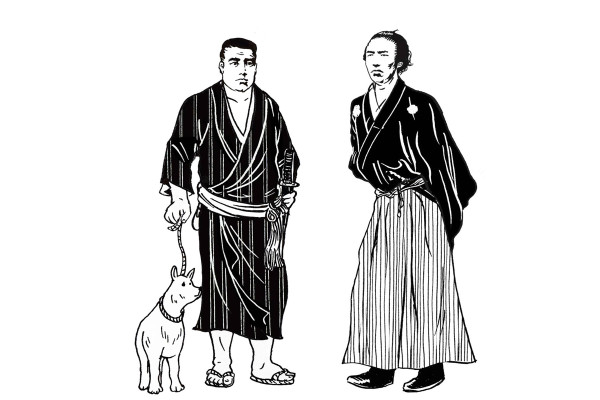
Кадзия-тё
Улица, где родились герои
Место рождения Такамори Сайго
Сайго родился в 1827 году старшим сыном в семье самурая невысокого ранга. Квартал Сита-Кадзия-тё, сегодня просто Кадзия-тё, удивительно щедр на великих людей: отсюда вышло множество деятелей конца сёгуната и реставрации Мэйдзи. На месте дома Сайго стоит каменный памятник.
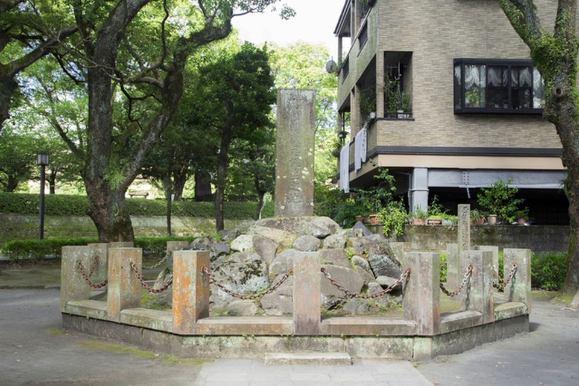
Место рождения Такамори Сайго
- Адрес
- префектура Кагосима, город Кагосима, Кадзия-тё, 5-2
Музей «Исин фурусато-кан» и Тосимити Окубо
В том же квартале стоит городской музей «Исин фурусато-кан». Он рассказывает, как жили Сацума и вся Япония в конце сёгуната и кто из героев поддержал реставрацию. Вместо скучных витрин здесь фильмы и роботы, поэтому эпоха перемен становится понятной даже тем, кто путается в японской истории. Вход для взрослых стоил 300 иен в 2020 году.
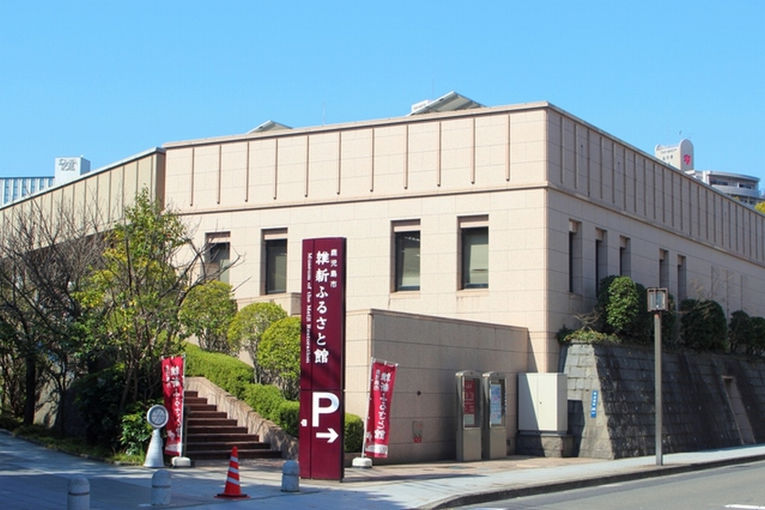
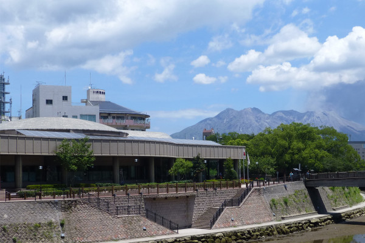
Это лучшее место, чтобы поближе познакомиться с Тосимити Окубо, соратником Сайго и одним из руководителей нового правительства.
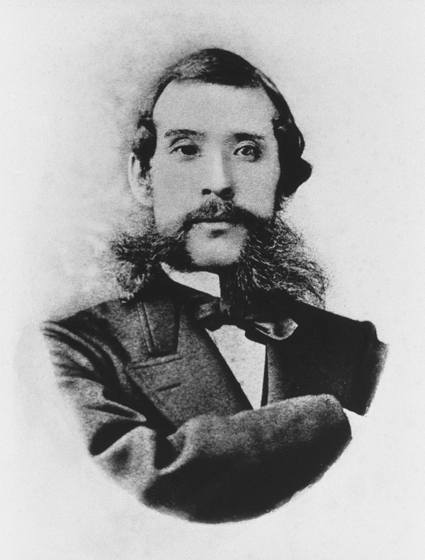
О нём рассказывают три истории. Первая о дружбе, которую не разрушила политика. Пути Окубо и Сайго разошлись, но, узнав о гибели Сайго, Окубо плакал навзрыд и в смятении бродил по дому. Говорят, он повторял на сацумском диалекте:
«С твоей смертью рождается новая Япония. Сильная Япония…»
Тосимити Окубо, по преданию
Вторая история о деньгах. Окубо был безупречно честен и ничего не копил для себя. Правительство Мэйдзи было бедным, и общественные работы, на которые не хватало бюджета, он оплачивал из своего кармана, вплоть до того, что лично закрывал государственные долги. После его смерти остались огромные долги.
Третья история самая неожиданная. В отличие от Сайго, Окубо обожал фотографироваться, и среди деятелей правительства Мэйдзи он выделялся этой страстью. Его портретов сохранилось много, и позы на них самые разные: похоже, фотографию он действительно любил.
Музей «Исин фурусато-кан»
- Адрес
- префектура Кагосима, город Кагосима, Кадзия-тё, 23-1
- Телефон
- +81 99-239-7700
- Часы работы
- 9:00–17:00 (вход до 16:30)
- Цены / Вход
- взрослые 300 иен, школьники 150 иен
Сирояма
Последние годы и последний бой
Усадьба Сайго в Такэси
С 1873 года и до начала Сацумского восстания в 1877 году Сайго четыре года жил в усадьбе в районе Такэси. Сам дом не сохранился, от тех времён остался только колодец.
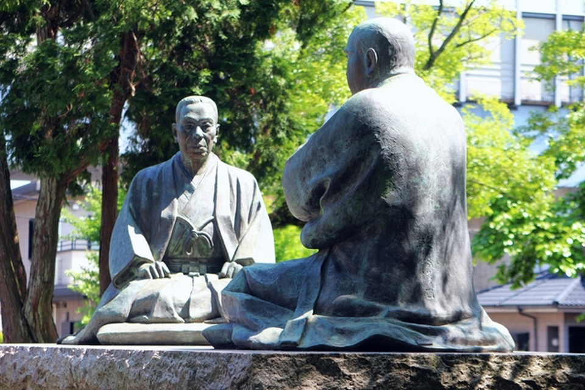
Место усадьбы Такамори Сайго в Такэси
- Адрес
- префектура Кагосима, город Кагосима, Такэси, 2-28-7
Музей Сайго Нансю
«Нансю» это литературное имя, которым Сайго подписывал свою каллиграфию. Музей стоит рядом с кладбищем, где похоронены павшие в Сацумском восстании. Внутри документы и фильмы о жизни и делах Сайго, а также экспозиция о Нариакире Симадзу, князе Сацумы. Вход для взрослых стоил 200 иен в 2020 году.
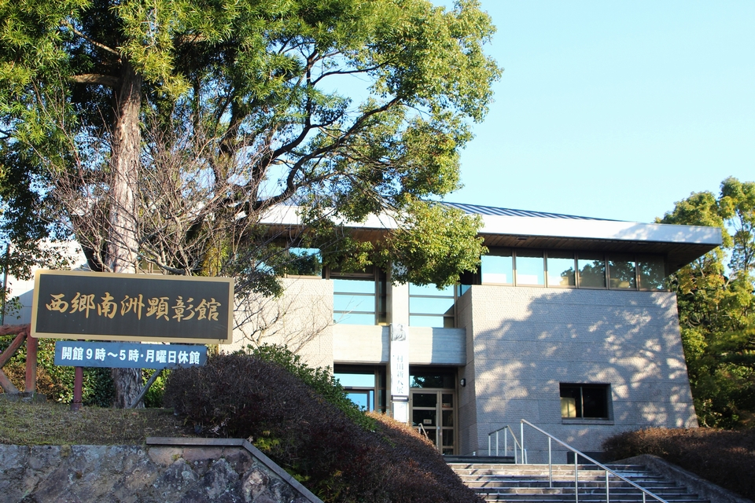
Музей Сайго Нансю
- Адрес
- префектура Кагосима, город Кагосима, Ками-Тацуо-тё, 2-1
- Телефон
- +81 99-247-1100
- Часы работы
- 9:00–17:00
- Выходные
- понедельник, новогодние праздники
- Цены / Вход
- взрослые 200 иен, школьники 100 иен
- Сайт
- saigou.jp
Холм Сирояма
Сацумское восстание самураев шло под началом Сайго, и последнее ожесточённое сражение развернулось именно здесь. Сирояма это невысокий холм, всего 107 метров, прямо в центре города Кагосима. Со смотровой площадки открывается вид на Сакурадзиму за заливом: пожалуй, самая узнаваемая картина Кагосимы.
Холм Сирояма
- Адрес
- префектура Кагосима, город Кагосима, Сирояма-тё, 22
Место гибели Такамори Сайго
Сайго погиб 24 сентября 1877 года. На месте, которое считают местом его смерти, стоит памятник с надписью о событиях того дня.
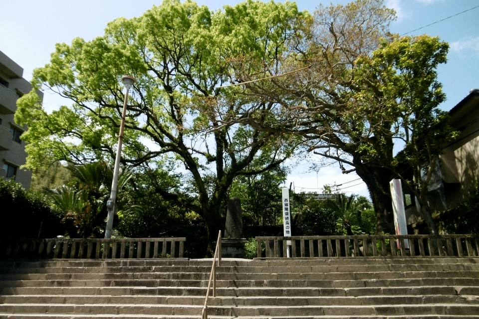
Место гибели Такамори Сайго
- Адрес
- префектура Кагосима, город Кагосима, Сирояма-тё, 12
Руины Сигакко
У подножия Сироямы находилось главное здание Сигакко, частной школы, которую основал Сайго. Вокруг тоже шли жестокие бои Сацумского восстания, и на каменной ограде до сих пор видны следы пуль.
Руины Сигакко
- Адрес
- префектура Кагосима, город Кагосима, Сирояма-тё, 8
Рэймэйкан
Рядом находится Рэймэйкан, центр исторических материалов префектуры Кагосима. Здесь хранятся личные вещи Сайго и документы княжества Сацума конца сёгуната.
Рэймэйкан
- Адрес
- префектура Кагосима, город Кагосима, Сирояма-тё, 7-2
- Телефон
- +81 99-222-5100
- Часы работы
- 9:00–18:00 (вход до 17:30)
- Выходные
- понедельник (если праздник, то на следующий день), 25-е число каждого месяца (кроме выходных и праздников), с 31 декабря по 2 января
Хиоки
Татэваки Комацу: начальник Сайго и Окубо
Татэваки Комацу был старшим советником княжества Сацума, то есть стоял выше и Сайго, и Окубо.
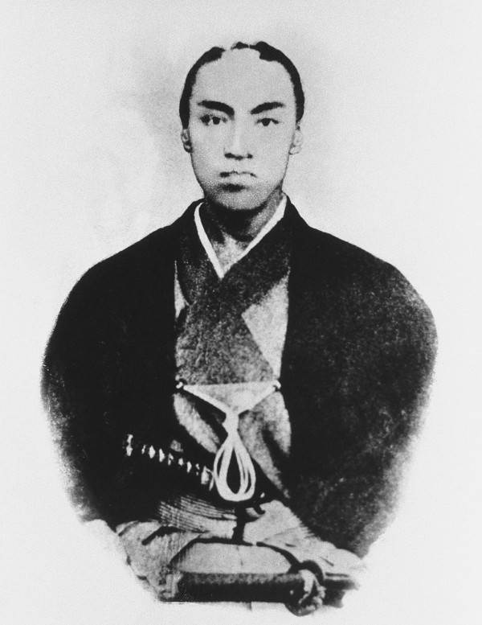
Комацу славился любовью к жене. В 1856 году, вскоре после свадьбы, супруги, как говорят, отдыхали на онсэне Эйноо в Кирисиме. Свадебным путешествием номер один в Японии обычно считают поездку Рёмы Сакамото, но запись о Комацу на десять лет старше.
Одна история объясняет, почему Сайго был ему так предан. Желая испытать старшего по положению, Сайго встретил его, лёжа в комнате. Комацу не рассердился, а велел слуге принести гостю подушку под голову. Услышав это, Сайго попросил прощения за грубость и поклялся ему в верности.
Высоко ценил Комацу и Рёма Сакамото. В его наброске состава нового правительства Комацу стоял первым, впереди Сайго, Окубо и других лидеров.
Кладбище рода Комацу
Комацу похоронен в Хиёси, районе города Хиоки к западу от Кагосимы. Здесь, на месте храма Онриндзи, семейного храма рода Комацу, стоят надгробия всех поколений семьи. У начала дороги к кладбищу сохранились статуи стражей храма нио, пострадавшие в годы кампании против буддизма в начале эпохи Мэйдзи. Осматривать кладбище можно свободно и бесплатно.
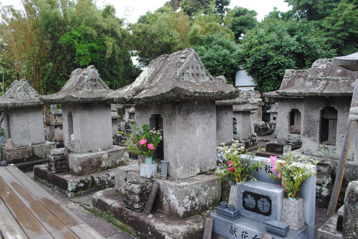
Кладбище рода Комацу (руины храма Онриндзи)
- Адрес
- префектура Кагосима, город Хиоки, Хиёси-тё, Ёситоси, 5004-3
- Телефон
- +81 99-292-2111 (отдел развития района, филиал мэрии Хиоки в Хиёси)
- Часы работы
- свободное посещение
- Цены / Вход
- бесплатно
Сэнганъэн
Нариакира Симадзу: князь, который строил заводы
Третий человек этой истории князь Нариакира Симадзу, один из самых энергичных правителей конца сёгуната.
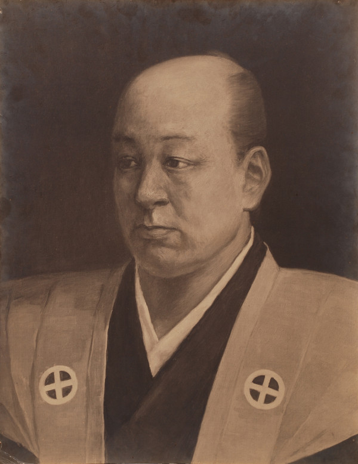
Нариакира страстно любил рыбалку. О причине его смерти спорят до сих пор, и по одной из версий это была не холера и не яд, а отравление свежей рыбой. Если так, то одного из лучших правителей эпохи погубило обычное пищевое отравление.
Музей Сёко сюсэйкан
Центром его промышленных проектов был комплекс «Сюсэйкан». Машинный цех, достроенный в 1865 году, признан важным культурным достоянием Японии и включён в список Всемирного наследия. Сегодня в нём работает музей Сёко сюсэйкан, рядом с садом Сэнганъэн. Вход для взрослых стоил 1000 иен в 2018 году.
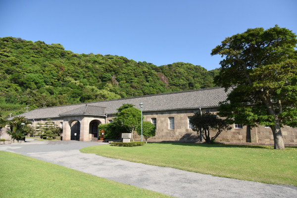
Музей Сёко сюсэйкан
- Адрес
- префектура Кагосима, город Кагосима, Ёсино-тё, 9698-1
- Телефон
- +81 99-247-1511
- Часы работы
- 8:30–17:30
- Цены / Вход
- взрослые 1000 иен, школьники 500 иен
- Сайт
- shuseikan.jp
Эти люди родились в бурную эпоху и смело ломали привычный порядок ради будущего. Пройти по их местам в Кагосиме значит увидеть, как из одного южного княжества выросла новая Япония.